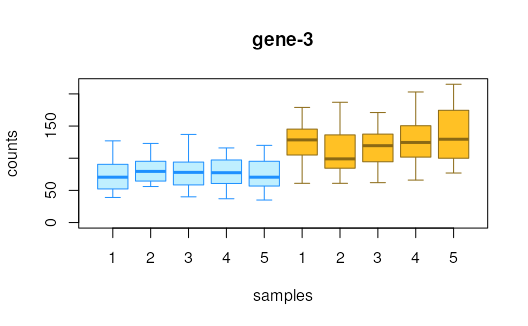
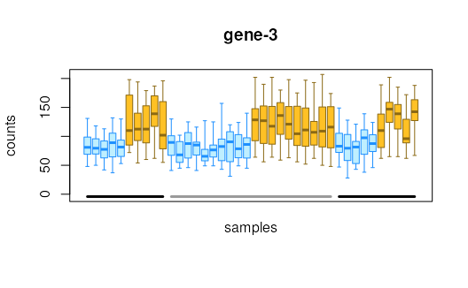

For datasets with inferential replicates, boxplots are
drawn for the two groups and potentially grouped by
covariates. For datasets with only mean and variance,
points and intervals (95
approximation) are drawn. Additionally, for numeric
x values, points and intervals will be drawn
and computeInfRV should be run first
in order to add the mean and variance statistics.
plotInfReps(
y,
idx,
x,
cov = NULL,
colsDrk = c("dodgerblue", "goldenrod4", "royalblue4", "red3", "purple4", "darkgreen"),
colsLgt = c("lightblue1", "goldenrod1", "royalblue1", "salmon1", "orchid1",
"limegreen"),
xaxis,
xlab,
ylim,
main,
mainCol,
legend = FALSE,
legendPos = "topleft",
legendTitle = FALSE,
legendCex = 1,
useMean = TRUE,
q = qnorm(0.975),
applySF = FALSE,
reorder,
thin,
shiftX
)a SummarizedExperiment (see swish)
the name or row number of the gene or transcript
the name of the condition variable for splitting
and coloring the samples or cells. Also can be a numeric,
e.g. pseudotime, in which case, cov can be used
to designate groups for coloring
the name of the covariate for adjustment
dark colors for the lines of the boxes
light colors for the inside of the boxes
logical, whether to label the sample numbers.
default is TRUE if there are less than 30 samples
the x-axis label
y limits
title
name of metadata column to use for title (instead of rowname)
logical, show simple legend (default FALSE)
character, position of the legend (default "topleft")
logical, whether to add the name of the grouping variable as a title on the legend (default FALSE)
numeric, size of the legend (default 1)
logical, when inferential replicates
are not present or when x is continuous,
whether to use the mean assay or the
counts assay for plotting
numeric, the quantile to use when plotting
the intervals when inferential replicates are not
present or when x is continuous. Default
is qnorm(.975) ~= 1.96 corresponding to 95
intervals
logical, when inferential replicates are
not present, should y$sizeFactor be divided out
from the mean and interval plots (default FALSE)
logical, should points within a group defined by condition and covariate be re-ordered by their count value (default is FALSE, except for alevin data)
integer, should the mean and interval lines be drawn thin (the default switches from 0 [not thin] to 1 [thinner] at n=150 cells, and from 1 [thinner] to 2 [thinnest] at n=400 cells)
when x is continuous and cov
is provided, the amount to shift the values on the x-axis
to improve visibility of the point and line ranges
(will be subtracted from the first level of cov
and added to the second level of cov)
nothing, a plot is displayed
y <- makeSimSwishData()
plotInfReps(y, 3, "condition")

y <- makeSimSwishData(n=40)
y$batch <- factor(rep(c(1,2,3,1,2,3),c(5,10,5,5,10,5)))
plotInfReps(y, 3, "condition", "batch")
